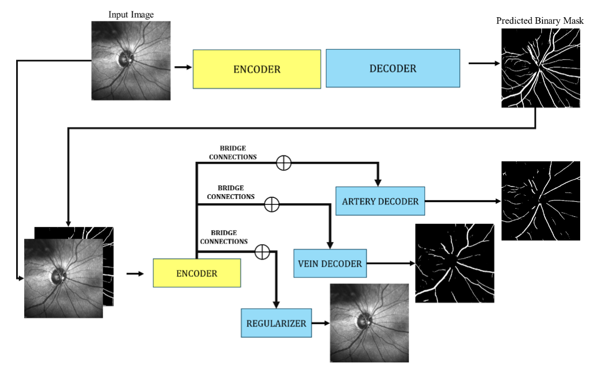
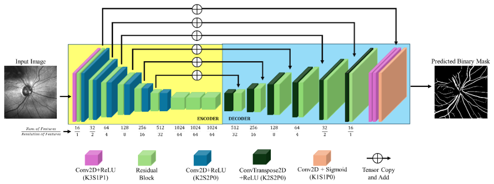
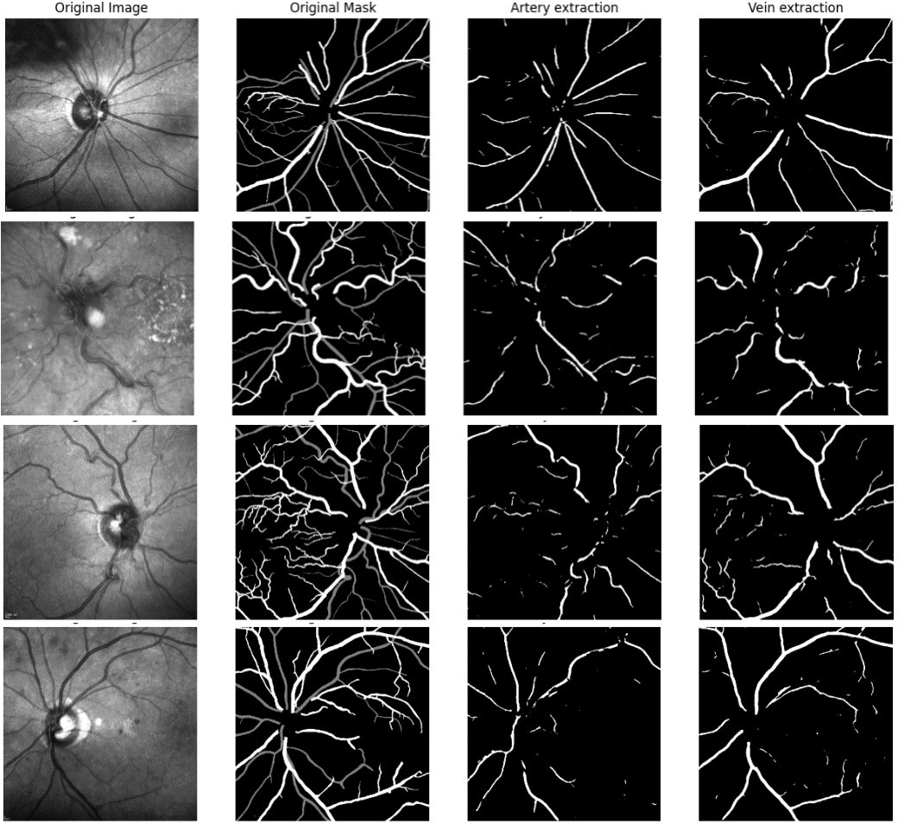

Using a vessel mask as a hint to tell arteries from veins in eye scans
The retina is the only deep micro-vessel bed that can be seen directly, without surgery or injury. That makes it useful for diagnosing systemic disorders such as diabetes, high blood pressure and leukemia. We built RavNet, a pair of neural networks that first finds all the vessels in an infrared eye scan and then uses that result to mark arteries and veins separately.
The problem
The retinal vessels work as a window into the body's smallest blood circulation. Changes in them, such as narrowing or leakage, can point to disease. Marking each pixel of a scan as artery, vein or background is called segmentation. Accurate segmentation can feed automated diagnostic tools, which the paper says could be deployed in remote or underserved areas for early screening without a specialist.
We worked with the RAVIR dataset. It holds 46 infrared images taken with a scanning laser ophthalmoscope, a device that sweeps a laser over the retina. The images come from the UCLA Stein Eye Institute and have high quality and high contrast. To enlarge the training data we applied horizontal flips, vertical flips and rotations. The paper says the flips and rotations were chosen to mimic realistic variations in eye orientation during imaging.
The idea
The standard tool for this job is the U-Net. It is shaped like the letter U. An encoder shrinks the image step by step to capture what is in it, and a decoder expands it back to a full-size label map. Shortcuts called skip connections help the decoder recover the full spatial resolution at the output.
RavNet runs two U-Nets in sequence. The first only produces a binary mask: vessel or no vessel. We then stack that mask with the original scan and give both to a second network, so that it starts with a prediction of where the vessels are.

How it works
The first network is a U-Net built from residual blocks, a common building block that adds its input back to its output. Its encoder works at six resolutions. The middle of the network, the bottleneck, has three residual blocks. The decoder mirrors the encoder, using transposed convolutions that double the resolution at each step, and it ends in a sigmoid activation, chosen for binary segmentation. Each skip connection adds the output of an encoder block to the matching decoder block.

The second network has one encoder and three decoders. One decoder outputs arteries and one outputs veins. The third, labelled the regularizer in the figure, rebuilds the input scan. This extra task serves to regularize the outputs, which means it acts as a constraint that guides training.
Both networks use residual blocks, dropout and batch normalization, and the encoder works at six resolutions. For training, the vessel pixels get a larger weight of 0.75 in the cross-entropy loss, because they are of greater importance. We used binary cross-entropy together with Dice loss for the vessel outputs and mean squared error for the reconstruction. The Dice measure is twice the overlap of the true and predicted masks divided by the sum of their areas.
What we found
We evaluated RavNet on unseen retinal scans and compared it with four U-Net-based models: U-Net, Dense U-Net, Residual U-Net and R2U-Net. It had the highest Dice score for both vessel types. For arteries, RavNet reached 0.7790, against 0.7510 for the plain U-Net and 0.7621 for R2U-Net (Table 1). For veins it reached 0.7890, against 0.7674 for the U-Net and 0.7826 for R2U-Net (Table 2). The paper concludes that RavNet outperforms the U-Net-based models it was compared with.

Results in more detail
The paper judges every model on unseen retinal scans with four measures. Sensitivity is the share of true vessel pixels that the model finds, so a low value means missed vessels. Specificity is the share of non-vessel pixels that the model correctly leaves alone, so a low value means false alarms. Accuracy is the overall share of pixels labelled correctly. The Dice index is twice the overlap of the predicted and true regions divided by the sum of their areas. The paper cautions that accuracy should be read alongside sensitivity and specificity, because that is where the trade-off between false alarms and misses shows up.
Table 1 covers arteries. Each row is a model and each column a measure.
| Method | Sensitivity | Specificity | Accuracy | Dice |
|---|---|---|---|---|
| U-Net [26] | 0.7275 | 0.9788 | 0.9670 | 0.7510 |
| Dense U-Net [33] | 0.7296 | 0.9795 | 0.9681 | 0.7584 |
| Residual U-Net [34] | 0.7375 | 0.9828 | 0.9697 | 0.7602 |
| R2U-Net [34] | 0.7408 | 0.9810 | 0.9706 | 0.7621 |
| RavNet | 0.7440 | 0.9802 | 0.9701 | 0.7790 |
RavNet has the highest sensitivity here, 0.7440, and the highest Dice, 0.7790. Residual U-Net has the highest specificity, 0.9828, and R2U-Net the highest accuracy, 0.9706 (Table 1).
Table 2 is the same comparison for veins.
| Method | Sensitivity | Specificity | Accuracy | Dice |
|---|---|---|---|---|
| U-Net [26] | 0.7389 | 0.9795 | 0.9685 | 0.7674 |
| Dense U-Net [33] | 0.7410 | 0.9808 | 0.9691 | 0.7704 |
| Residual U-Net [34] | 0.7455 | 0.9839 | 0.9701 | 0.7768 |
| R2U-Net [34] | 0.7492 | 0.9842 | 0.9728 | 0.7826 |
| RavNet | 0.7385 | 0.9929 | 0.9729 | 0.7890 |
For veins RavNet has the highest specificity, 0.9929, the highest accuracy, 0.9729 against 0.9728 for R2U-Net, and the highest Dice, 0.7890. Its sensitivity, 0.7385, is the lowest of the five models, and R2U-Net has the highest at 0.7492 (Table 2). So on veins RavNet makes few false alarms, but it finds a smaller share of the true vein pixels than the other models do.
Discussion
We conclude that the cascade pays off: RavNet outperforms the U-Net-based models it was compared with, and the abstract attributes the improvement in vessel delineation to the mask predictions of the first model. The second network starts from a prediction of where the vessels are. The extra decoder that rebuilds the input scan acts as a regularizer. The vein results also show why several measures matter. RavNet leads on Dice and specificity there, but has the lowest sensitivity.
The limits are plain. The RAVIR dataset is small, only 46 images, and all results come from it. The comparison is with four U-Net-based models. The paper lists stronger data augmentation, multimodal imaging, optimizing the models for real-time use, transfer learning and extensive clinical validation as future work.
The applications we have in mind are disease diagnosis and monitoring, surgical planning, telemedicine and research, and screening tools that could be used in remote or underserved areas without a specialist.
Sources
The figures and tables listed here are taken from the paper cited at the top of this page; the numbers quoted in the text come from it too.
- Figures: Fig. 2, Fig. 1, Fig. 3
- Tables: Table 1: sensitivity, specificity, accuracy and Dice for artery segmentation, RavNet and four U-Net variants; Table 2: the same four measures for vein segmentation
Cite the paper
Swarnendu Ghosh, C Das (2024). RavNet: Conditioning Retinal Vessel Identification Using a Cascaded Multi-objective U-Net. 5th International Conference on Frontiers in Computing and Systems (COMSYS 2024), Vol. 1, pp. 75–87 · Springer.
@inproceedings{ghosh2024ravnet,
author = {Ghosh, Swarnendu and Das, C},
title = {{RavNet:} Conditioning Retinal Vessel Identification Using a Cascaded Multi-objective {U-Net}},
booktitle = {5th International Conference on Frontiers in Computing and Systems (COMSYS 2024)},
volume = {1},
pages = {75--87},
publisher = {Springer},
year = {2024},
doi = {10.1007/978-981-96-8309-3_5}
}